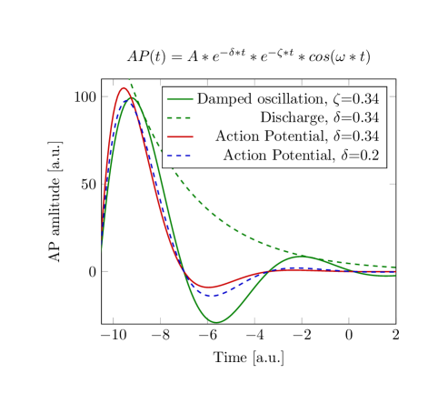

We can model the neuron as an electrolyte in an elastic shell, that gets somehow excited and excites damped vibration in the electrolyte it contains. The rush-in of ions results in electric, chemical, and elastic gradients, see [64]. The final result (shown in Fig. 1.5) is that the membrane vibrates the electrolyte (with the cca. part ions inside). Moreover, the electrostatic repulsion and the concentration gradient of ions provide an offset voltage that triggers an electrical discharge that enables the ions to leave the neuron in the form of AP. The two processes are superimposed.

The sudden rush-in of ions has (at least) a double effect. One effect is that they suddenly press the surface of the membrane that elastically increases its diameter [65]. The case is practically identical to the deformation of an elastic plate induced by the hydrostatic pressure of a water column. Initially, the base plate of a container is suddenly subjected to hydrostatic pressure, and it reaches equilibrium after initial oscillations. The diagram line of the process is shown in the figure [66], and the method of simulation is discussed in [67]. Compare the diagram line to the gradient in Fig. 2.18, middle inset.
The elastic force is described by the
formula. The damped elastic oscillation almost perfectly describes the time course of the AP. However, the elastic force oscillates and decays exponentially, so the dominance of the elastic term changes with time.
The other effect is that a large amount of positive charges appears in the neuron, significantly increasing the membrane’s potential. The axon remains on the resting potential, so the potential gradient drives a current. A discharge process takes place where the amount of charge inside the neuron exponentially decreases
The two effects act at the same time, that is
(the two exponential factors have physically different reasons, but they can be contracted mathematically), resulting an oscillation shown in Fig. 1.5. This model combines the effects of two distinct disciplines, but may not be perfect, because of the dual role of ions: the electric effect changes the oscillating mass and the oscillation changes the amount of charge. However, it suggests a way to synthesize the two effects, and explain a till now unexplained thermodynamical observation.
The early experimental observation [68], that positive and negative heat production is associated with a nerve impulse, suggested a thermodynamic model. As Hodgkin wrote: ”Hill and his colleagues found [68] that an initial phase of heat liberation [of the action potential] was followed by one of heat absorption. […] a net cooling on open-circuit was totally unexpected and has so far received no satisfactory explanation.” [69] ”All authors came to similar conclusions: during the action potential, no significant net heat is produced. Transient heat releases are mostly reabsorbed in the second phase of the action potential. …The finding of a reversible heat release during the action potential of nerves is a striking and very fundamental fact. It is inconsistent with the HH model. The physics underlying the nervous impulse must rather be based on reversible processes”. [70] At that time it was commonly known that compressing a medium produces heating and extending it causes cooling. Although modeling neuron as a thermodynamic engine that is heated and cooled, and produced no significant net heat, would be trivial, no such model came to light. The probable reason is that no reasonable idea shined up that could attach the observed heat absorbtion with the observed evident signs of the electrical operations.
Furthermore, it explains the experienced constant intensity of AP (without the ad-hoc hypothesis of cooperating ion channels in the axon’s wall). The vibrating electrolyte behaves as a ’soliton’ [76], that is, transfers the pressure wave with a minimum material transport and intensity loss, and the dissociated ions inside the vibrated electrolyte generate the potential field observed as AP.